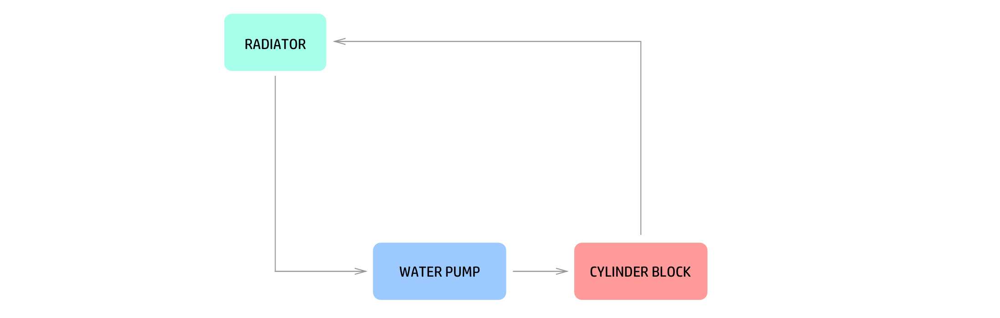

Thermostatic valves are often a discarded little component in your cars. Many of the cooling system issues are because of a damaged or missing thermostat valves. Lets analyse this little component in detail. This article is a part of a series of articles in Automobile Engineering.
Thermostatic valves, or thermostats for short is a small heat controlled fluid valve in your car’s water cooling system. It opens when it is heated up beyond a high threshold temperature and closes when the temperature goes below a lower threshold. It is not a snap opening or closing at threshold temperatures, but rather a progressive opening and closing, virtually allowing it to control the flow rate based on the temperature.
IC engines produces immense amount of heat as it operates. Especially near and around the cylinder block. The heat has to be quickly removed from the engine so as to avoid overheating damage. A water cooling system is the most widely used method to do this in passenger car engines. Your car’s water cooling system typically looks like the following.
The water pump is run by a belt, powered by the engine itself. This belt also turns a fan next to the radiator improving its efficiency, and thus called a fan-belt. The water pump itself will be discussed in detail in a coming up article. When you start your engine on a cold morning, the thermostat will be closed, and bypass valve will be open. So, the water never reaches the radiator, and circulates around the cylinder block. This helps the engine to reach the operating temperature quickly. It also allows your car’s air-conditioner to heat up the cabin quickly on such cold mornings.
When the water heats up and reaches the threshold temperature, the thermostat slowly opens, and the bypass valve slowly closes, allowing a portion of the water to pass through the radiator. This cools down the water coming back to the engine. If the water heats up further, say because you are pedalling the engine real hard, the thermostat fully opens up, and bypass valve closes completely. This prevents bypass circulation and thus all the water goes through the radiator, cooling the water down to the maximum. Typically, the thermostat never has to fully open, as the cooling system will be able to keep the engine under operating temperature range by bifurcating the water between the thermostat and the bypass valves.
What might happen, if the bypass valve is clogged?
This would happen! Basically, the water pump will be pushing against a closed thermostat when you start your car in the morning. This is waste of energy, and might damage the water pipes eventually, because of the pressure. Another issues is that since the water is not circulating while the thermostat is closed, local hot spots will be developed as the engine heats up. This is bad for your engine. Once the engine reaches the operating temperature, a clogged bypass valve may not be of much difference. Modern cars have both thermostat and bypass valve combined into the same part, as shown in the image on the top of this article. Bypass valves are typically spring loaded, and introduces just a small load on the water pump when thermostat is closed.
Older cars engines did not used to have a bypass line, and operated like in the image above. A seamingly simple solution has improved the cooling system many fold.
Some car mechanics suggest to remove the thermostat when the car starts to experience overheating problems. What would happen if the thermostat is removed?

In this case, the water is always passing through the radiator at full swing. This will result in the engine operating at a suboptimal temperature. It will be lower than the operating temperature most of the time, or even higher in some specific situations. Since the water takes more time to heat up, you may not be able to run your cabin heater either during this time. Running the engine at non operating temperatures for long time is not good for the engine, because it affects the efficiency of the combustion. From a naive thought process, removing a thermostat may keep your engine cool all the time, but it is not a suggested solution because of the above reasons.
Even moder cars have a relatively simple thermostat design. Inside the thermostat, there is a barrel filled with a pellet of wax, which melts and expands, thus pushing a piston out, when the temperature is raised. This piston is connected to a diaphragm against an opening, and pushing it opens up the valve. When the thermostat is cooled down, the piston return to the original position by the help of a return spring, as the wax solidifies. The operating temperature is determined by the specific composition of the wax. It is a purely mechanical valve-sensor combination. Watch a video to see a thermostat in action.